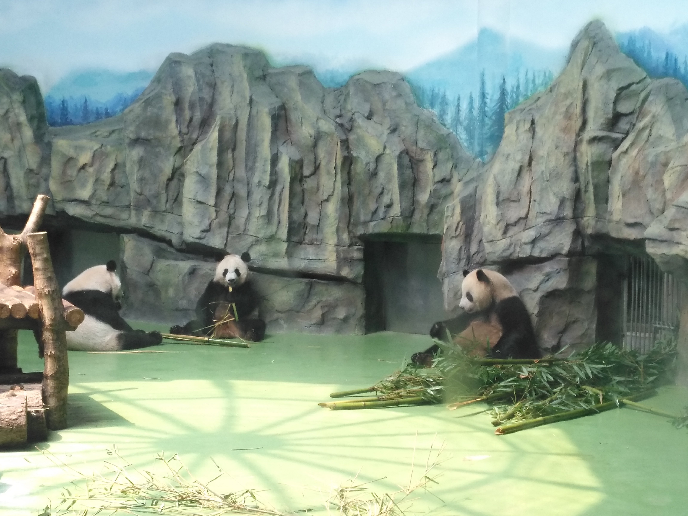

Pandas in Chengdu
chengdu
Chengdu feels warm and alive — the kind of place that makes you slow down and smile. It's home to China's beloved giant pandas, where you can watch them nap, play, and munch on bamboo all day. And when evening comes, nothing beats a bubbling pot of spicy hotpot shared with friends. In Chengdu, life is never in a rush — it's all about good food, gentle pandas, and easy laughter.